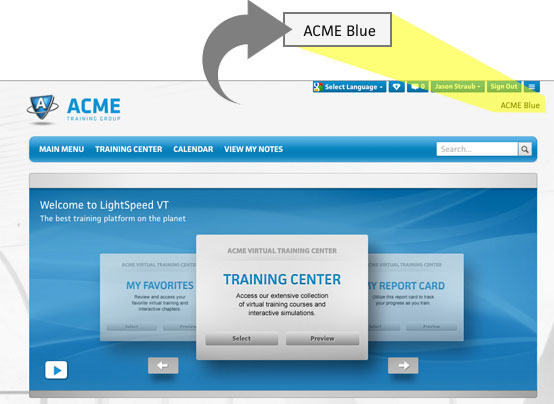
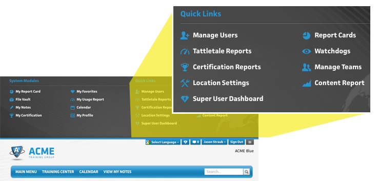
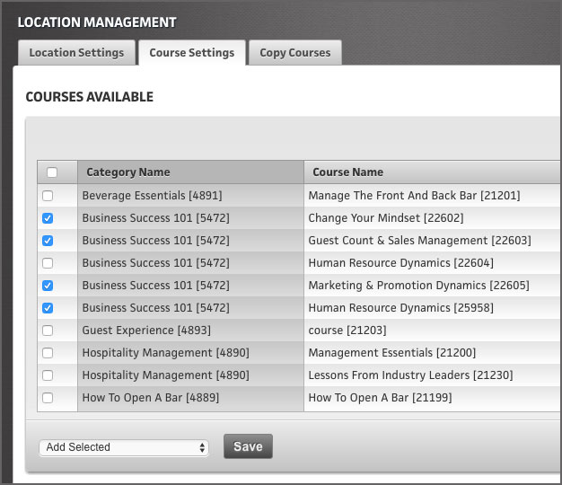

Overview
This section has some basic instructions on how to turn Content ON and OFF at different levels.
In previous sections we talked about how the Courses live in the Content Container, and that is the utmost “top” level that you can turn a Course On and Off at. And a Course will need to be in a Content Role before it can really be released out to the world in any way. So, this section is going to assume you already have your Courses created, and have put them into Content Roles, and now you want to make them available at Locations - and thus for Users. If you're still unclear how to get this far - Check out the "Courseware Management" section and then come back here.
Okay, you will first want to Super User to the Location where you want to Active/Deactivate the Course(s) - the most common way is go to the Super User Dashboard, and use the “102 - Location Management” Tool - and search for the Location you want, and click on it so that you are Super User’d to it. You’ll double check you are in the correct Location by seeing the Location name on the top right.

Then go to the “Location Settings” - this button is located in the Quick Links menu that is tucked in to the top of every screen. Remember, now that you are Super User’d to this specific Location, all of these Quick Links are tools and reports that are specific to this one Location only.

Once you are in the Location Settings, click on the second tab, called “Course Settings.” This will show you a list of all of the Active Courses from your Content Container. By checking (or unchecking) these boxes, you can turn these Courses ON or OFF for this one Location.

At the bottom, you can select what “update type” you want to do:
-
Add Selected - this will leave whatever settings are in place, and merely “Add Selected” Courses that you “checked” above to it. It is harmless if you add a Course twice - don’t worry about that.
-
Delete All Existing and Add Selected - this is handy if there are 100’s of Courses listed and you want to ensure you only leave on whatever you just “checked” so this will remove any settings that were there prior, and ONLY add the new ones you “checked.”
-
Delete Selected - this is where you want to remove certain ones only. This will take into account what is currently “checked” for this Location, and then delete the ones you have selected.
Click “Save” once you are done making changes.
Another thing that may come up, is that you just want to turn off a course everywhere, because it is perhaps old and you don’t need on it anymore. You can make the Course Inactive in the Content Container, and it will turn off everywhere on the planet that it is on.
Bulk Content Activation/Deactivation
YES! It is possible!
There are Admin tools to do bulk content activations and deactivations for lots of Locations at a time! However, we’re not quite ready to have them LIVE yet for Super User B’s (sorry). In the meantime - the LSVT Client Care Dept. can assist you in bulk content changes - simply give us a call or an email, and we’ll be happy to assist!
We’ll just ask you what the list of Course ID’s you want activated (or deactivated) and a list of Location ID’s or just tell us - “All Locations.”